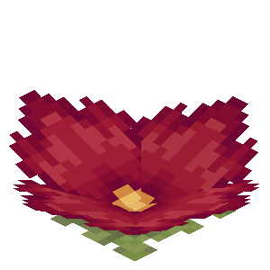

About
The bog blossom is a decorative block that emits yellow particles!
Config
Set the Enable Bog Blossoms option to Yes (or true) to use them, or No (or false) to hide them. Yes (or true) is the default setting.
Natural generation
Bog blossoms can be found in swamps, mangrove swamps, and modded swamps on land.
Obtaining
Bog blossoms can be obtained from swamps or by using bonemeal on a bog blossom. When a bog blossom is bonemealed another will grow nearby!
Breaking
Bog blossoms can be broken with any item or by hand.
Placing
Bog blossoms can be placed on any supporting solid block.
Bog Blossom

| Renewable | Yes (Bonemeal) |
| Stackable | Yes (64) |
| Tool | Any tool |
| Blast Resistance | 0 |
| Hardness | 0 |
| Luminous | Yes (5) |
| Transparent | No |
| Catches fire from lava | No |